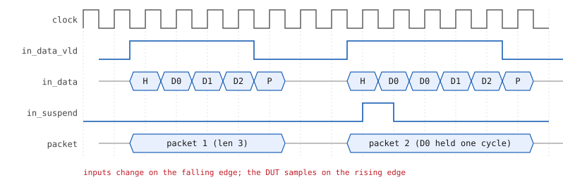
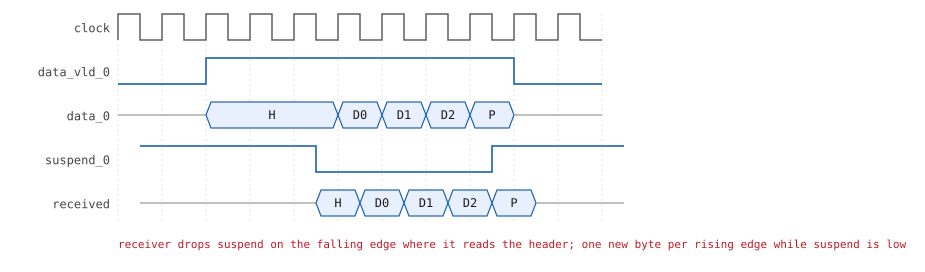
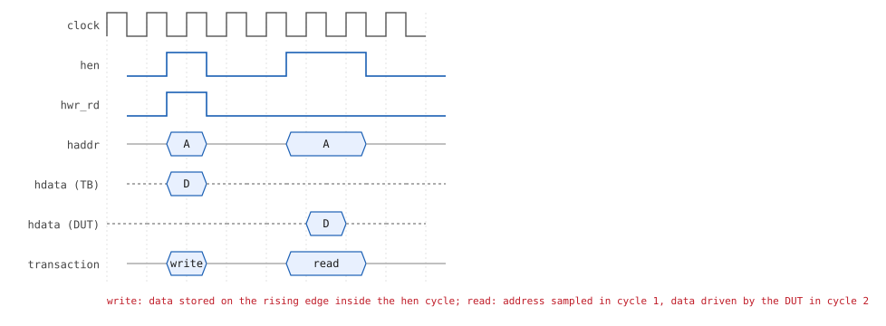

The YAPP router — specification¶
YAPP stands for Yet Another Packet Protocol. The router accepts packets on one input port and forwards each one to one of three output channels, chosen by the address in the packet header. A host bus (HBUS) programs the router's registers and reads its counters and memories.
flowchart LR
subgraph TB_in["YAPP input port"]
in_data["in_data[7:0]"]
in_data_vld
in_suspend
end
subgraph DUT["yapp_router"]
direction TB
fsm["input FSM<br/>header / payload / parity"]
f0[["FIFO 0<br/>16 x 8"]]
f1[["FIFO 1<br/>16 x 8"]]
f2[["FIFO 2<br/>16 x 8"]]
regs["registers<br/>ctrl_reg, en_reg, counters,<br/>mem_size_reg, yapp_pkt_mem, yapp_mem"]
fsm --> f0 & f1 & f2
fsm -.-> regs
end
subgraph CH["output channels"]
c0["data_0, data_vld_0, suspend_0"]
c1["data_1, data_vld_1, suspend_1"]
c2["data_2, data_vld_2, suspend_2"]
end
subgraph HB["HBUS host port"]
hb["hdata[7:0] (inout), haddr[15:0], hen, hwr_rd"]
end
TB_in --> fsm
f0 --> c0
f1 --> c1
f2 --> c2
hb <--> regs
DUT --> error
clock & reset --> DUTPorts¶
| Port | Dir | Width | Description |
|---|---|---|---|
clock, reset |
in | 1 | reset is active high |
in_data |
in | 8 | packet bytes |
in_data_vld |
in | 1 | high for header and payload bytes, low for the parity byte |
in_suspend |
out | 1 | DUT asks the sender to hold the current byte (target FIFO full) |
data_x |
out | 8 | channel x data (x = 0, 1, 2) |
data_vld_x |
out | 1 | a byte is presented on data_x |
suspend_x |
in | 1 | receiver not ready; low = read the byte |
hdata |
inout | 8 | host data bus (tri-state) |
haddr |
in | 16 | host address |
hen |
in | 1 | host access enable |
hwr_rd |
in | 1 | 1 = write, 0 = read |
error |
out | 1 | pulses after a packet with bad parity |
Packet format¶
| Byte | Bits | Content |
|---|---|---|
| 0 (header) | [7:2] |
length — number of payload bytes, 1 … 63 |
[1:0] |
addr — output channel 0, 1 or 2; 3 is illegal |
|
| 1 … length | [7:0] |
payload |
| length + 1 | [7:0] |
parity — bitwise XOR of the header and all payload bytes (even parity) |
A packet is therefore length + 2 bytes long, from 3 to 65 bytes.
Input port protocol¶

- All inputs are active high and driven on the falling edge of the clock; the router samples them on the rising edge.
in_data_vldgoes high together with the header byte. Each following falling edge carries the next payload byte.- On the falling edge after the last payload byte,
in_data_vldgoes low and the parity byte is driven. in_suspendhigh means "the FIFO is full": the input data must hold its value until it drops. A byte is accepted at a rising edge only whenin_suspendis low.errorpulses high for one cycle, 1 to 10 cycles after a packet with bad parity has been received.
Output channel protocol¶

- Each channel has an internal 16-byte FIFO.
- The router raises
data_vld_xwhen a byte is ondata_x. The receiver reads the byte on a falling edge and de-assertssuspend_xon that same edge. - While
suspend_xstays low, the router presents a new byte on every rising edge. The receiver re-assertssuspend_xon the falling edge where it reads the parity byte. - The receiver learns how many bytes to read from the header (
length + 2).
HBUS host protocol¶

- Inputs are driven on the falling edge, sampled on the rising edge.
- Write — 1 cycle.
hen = 1,hwr_rd = 1,haddrandhdatavalid. The register is written on the rising edge;henreturns to 0 in the next cycle. - Read — 2 cycles.
hen = 1,hwr_rd = 0. The DUT sampleshaddron the first rising edge and driveshdataduring the second cycle. Whenhendrops, the DUT tri-stateshdata. - Because
hdatais bidirectional, the testbench must drive it only during a write and must connect the DUT to a wire (hbus_if.hdata_w), not to a logic variable.
Registers¶
| Address | Register | Reset | Bits | Field | Access | Meaning |
|---|---|---|---|---|---|---|
0x1000 |
ctrl_reg |
0x3f |
[5:0] |
maxpktsize (RAL name plen) |
RW | maximum payload length |
[7:6] |
unused | RW | — | |||
0x1001 |
en_reg |
0x01 |
[0] |
router_en |
RW | router enable |
[1] |
parity_err_cnt_en |
RW | enable the parity-error counter | |||
[2] |
oversized_pkt_cnt_en |
RW | enable the oversized-packet counter | |||
[3] |
reserved | RW | not implemented | |||
[4] … [7] |
addr0_cnt_en … addr3_cnt_en |
RW | enable the per-address counters | |||
0x1004 |
parity_err_cnt_reg |
0x00 |
[7:0] |
RO | packets with bad parity | |
0x1005 |
oversized_pkt_cnt_reg |
0x00 |
[7:0] |
RO | packets longer than maxpktsize |
|
0x1006 |
addr3_cnt_reg |
0x00 |
[7:0] |
RO | packets to the illegal address 3 | |
0x1009 |
addr0_cnt_reg |
0x00 |
[7:0] |
RO | packets to address 0 | |
0x100a |
addr1_cnt_reg |
0x00 |
[7:0] |
RO | packets to address 1 | |
0x100b |
addr2_cnt_reg |
0x00 |
[7:0] |
RO | packets to address 2 | |
0x100d |
mem_size_reg |
0x00 |
[7:0] |
RO | length of the last packet (only [5:0] are used) |
Memories¶
| Start | Name | Size | Access | Meaning |
|---|---|---|---|---|
0x1010 |
yapp_pkt_mem |
64 × 8 | RO | bytes of the last packet received |
0x1100 |
yapp_mem |
256 × 8 | RW | scratch memory |
Addresses 0x1002, 0x1003, 0x1007, 0x1008, 0x100c, 0x100e … 0x100f and
0x1050 … 0x10ff are not mapped: they read as 0x00 and ignore writes. Every address holds
one byte: the 64 packet-memory bytes occupy 0x1010 … 0x104f, the 256 scratch bytes
0x1100 … 0x11ff.
Try it: the register file¶
A model of yapp_hbus_regs + the end-of-packet report of yapp_input_fsm. Pick an address, read
or write it, and watch the policy work; Send a packet moves the counters, fills
yapp_pkt_mem and updates mem_size_reg exactly as the RTL does. The same widget sits on the
project map (click the registers block
inside the DUT).
Behaviour rules¶
length > maxpktsize→ the whole packet is dropped.router_en = 0→ all packets are dropped. Changing it in the middle of a packet is undefined.- Changing the counter-enable bits in the middle of a packet is undefined.
- A counter only counts while its enable bit is set.
Decisions where the specification is silent¶
The exercise text leaves a few corner cases open. The DUT, the reference model and the register tests in this repository all follow the same choices:
| Question | Decision |
|---|---|
Does a dropped packet update yapp_pkt_mem / mem_size_reg? |
Yes — the packet was received, just not forwarded. |
Is parity checked / counted and error raised for a dropped packet? |
Yes (oversized or address 3). |
| Two bad packets end less than 10 cycles apart? | Each gets its own pulse, 1..10 cycles after its parity byte; two pulses may be on adjacent cycles (every cycle with error high is one pulse). |
What happens when router_en = 0? |
The input is "deaf": the FSM tracks the bytes to stay in sync, but nothing is forwarded, counted or stored. |
| An oversized packet to address 3? | Counts in both oversized_pkt_cnt_reg and addr3_cnt_reg (each condition is evaluated independently). |
| Do the address counters count dropped packets? | Yes — addrN_cnt_reg counts every packet received with address N while the router is enabled. |
| A counter at 255 counts once more? | It wraps to 0 (8-bit + 1, no saturation); counter_wrap_test checks it. |
| Writing to a read-only register over the HBUS? | Ignored. Writes to ctrl_reg[7:6] and en_reg[3] are stored and read back (they are declared RW). |